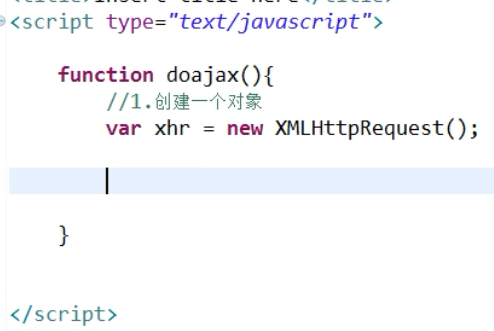
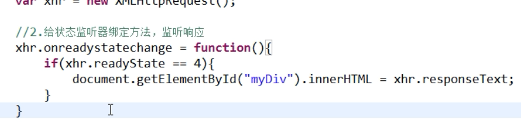
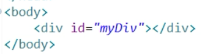
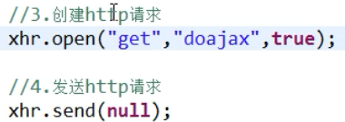
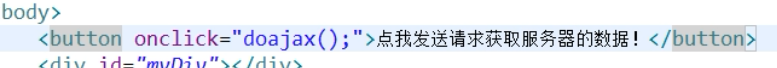
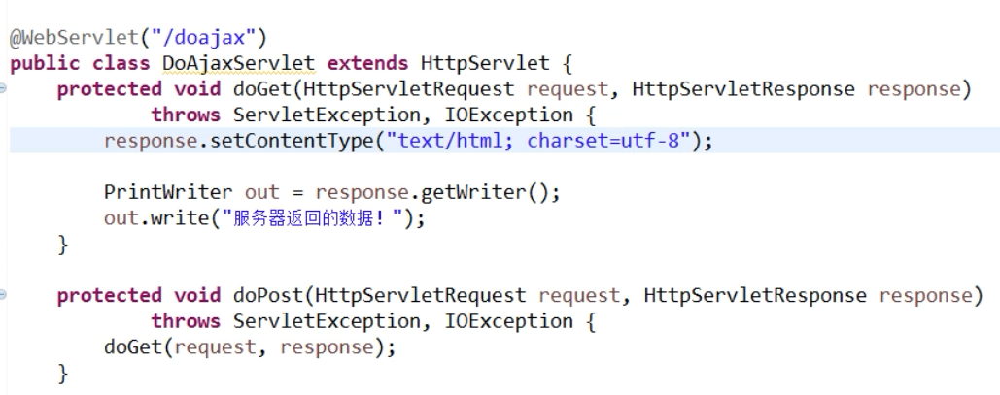
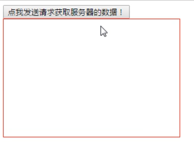
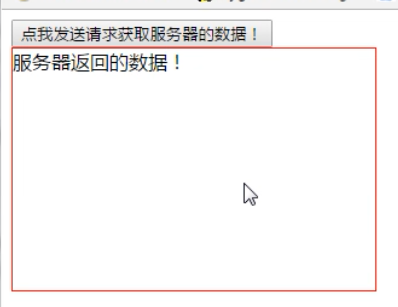

ajax 全称为 “Asynchronous JavaScript and XML”（异步 JavaScript 和 XML），是一种创建交互式网页应用的网页开发技术，本质上是一个浏览器端的技术，就是在不跳转页面的情况下，实现对服务器的访问并返回数据，将数据局部异步刷新在网页中的技术
ajax 不是一种新技术，是使用 JavaScript 将基于 web 标准（standards-based presentation）XHTML + CSS 的表示，DOM（Document Object Model）进行劢态显示及交互，JSON 操作，XMLHttpRequest 进行异步数据查询、检索，所有的东西绑定在一起的技术
传统 web 请求是用户发送 http 请求到服务器，由服务器处理了请求再返回数据，并显示在页面中
现在浏览器的内部有一个 ajax 引擎，首先有用户通过 JavaScript 调用 ajax 引擎，再由 ajax 引擎作为用户代理发送 http 请求到服务器，服务器处理了请求再返回数据给 ajax 引擎，再由 ajax 引擎解析后返回给浏览器
简单流程：
先在 jsp 页面中创建一个对象，接下来，创建 http 请求，再一个 button 触发点击事件，再写一个 servlet 类，最后运行 tomcat 服务器，打开浏览器测试点击 button 
总结：ajax 就是使用 XMLHttpRequest 对象向服务器发 http 请求，再将服务器返回的数据以特定的格式返回在浏览器中的技术，提高了用户体验度，优化了服务器和浏览器之间的传输，减少数据传输，减少了带宽占用